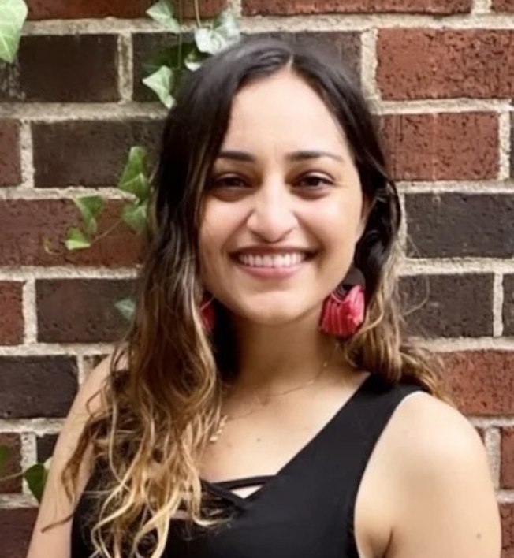

← People

Nikita Mehandru is a Ph.D. candidate at the UC Berkeley School of Information with a Designated Emphasis in Computational Precision Health (CPH) and an affiliation with Berkeley Artificial Intelligence Research (BAIR). She received her M.S. in Computer Science from UC Berkeley EECS, and bachelor’s degree from Claremont McKenna College. Her work develops and applies machine learning methods for clinical reasoning and disease progression modeling using unstructured text and time series data from electronic health records.
Publications
State-Space Modeling in Natural Language
ICLR Workshop on Time Series in the Age of Large Models · 2026
BioAgents: Bridging the Gap in Bioinformatics Analysis with Multi-Agent Systems
Scientific Reports · 2025
Physician-versus Large Language Model-Generated Summaries in the Emergency Department
medRxiv · 2025